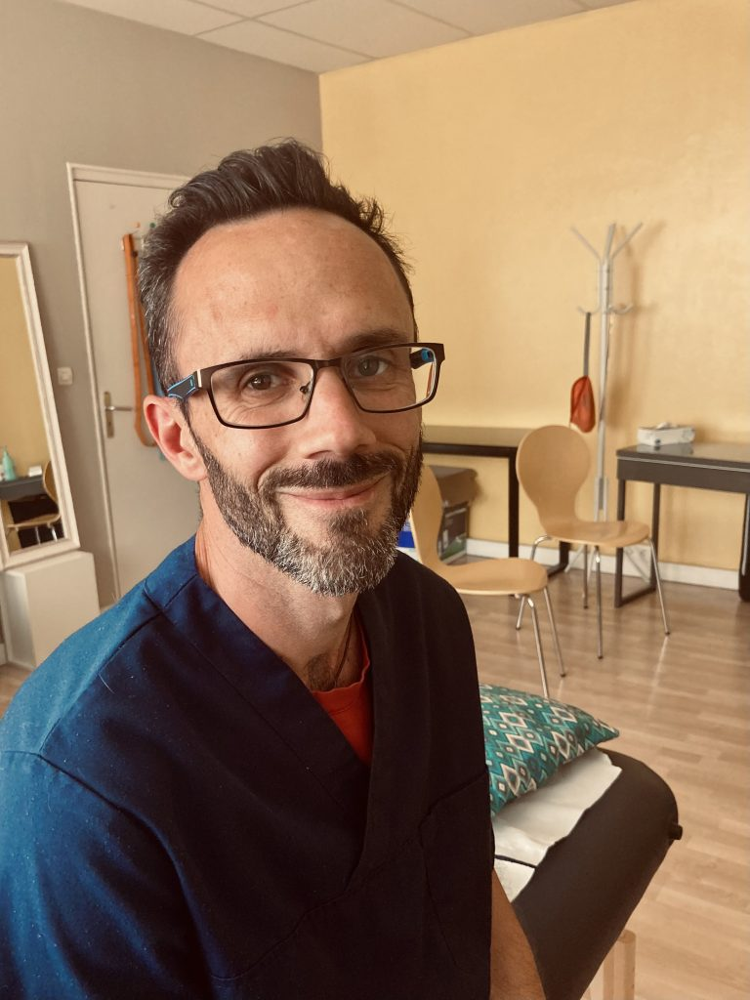

Les mécanismes
Des explications sur les mécanismes en action.
Votre ostéopathe
Thomas Garnier, votre ostéopathe D.O. à Ferney-Voltaire, promeut une approche douce et personnalisée pour soulager vos douleurs et améliorer votre mobilité.

Diplômé en ostéopathie D.O. du Collège Ostéopathique Européen, et formé aux neurosciences de la douleur.
Vous souffrez de douleurs au dos, à la nuque ou aux articulations et cherchez une solution durable ? En tant qu’ostéopathe à Ferney-Voltaire, j’accompagne mes patients avec une approche douce et globale, centrée sur l’écoute et l’éducation, pour vous aider à comprendre vos douleurs et retrouver confiance dans votre corps.
Découvrir les principaux motifs de consultation
Mon approche est différente :
Chaque geste est pensé pour vous soulager en toute sécurité, sans appréhension.
La douleur est souvent vécue comme une fatalité. Pourtant, elle a du sens, elle s’est installée dans un contexte, et dans un système cohérent : votre corps.
Mon rôle est de vous aider à décoder ce que votre corps exprime, afin que vous puissiez agir sur votre douleur et retrouver un rôle actif dans votre santé.
Vous repartez non seulement soulagé, mais aussi avec des explications claires et des conseils pratiques.
Une séance d’ostéopathie ne se limite pas au traitement. Je prends le temps de vous transmettre :
Des explications sur les mécanismes en action.
Des exercices adaptés, et comment les intégrer à votre quotidien.
Des stratégies pour prévenir les récidives.
L’objectif : que vous puissiez gérer vos douleurs de façon autonome et reprendre vos activités en toute confiance.
Votre douleur n’existe pas isolément. Elle est liée à votre histoire, à votre mode de vie, à votre stress parfois. En consultation, je prends en compte l’ensemble de ces facteurs pour vous proposer une prise en charge cohérente, personnalisée et tournée vers le long terme.
Lire ce qu’en disent les patients
Une écoute attentive de vos besoins.
Une approche douce, sans excès de manipulations.
Une pratique fondée sur les connaissances scientifiques actuelles (evidence-based).
Une relation de confiance, avec un suivi sur mesure.
Mon engagement : vous offrir une prise en charge individualisée, qui allie efficacité, pédagogie et respect de votre corps.